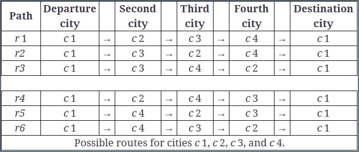
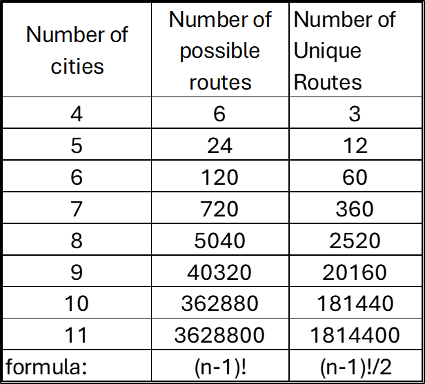
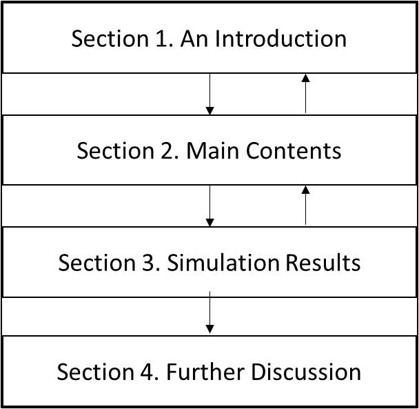
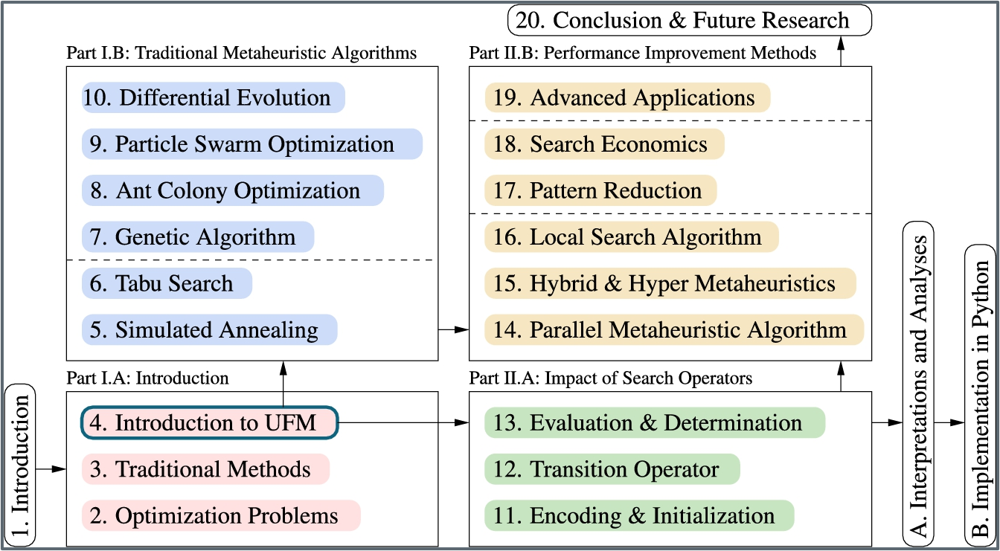
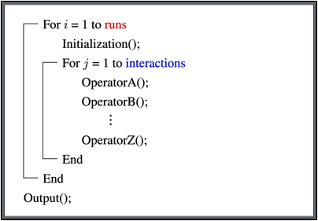

Most business problems are too large or too complex to be solved optimally, where the strict meaning of “optimal” means finding the provably best solution. Finding a solution that approximates the optimal solution is, therefore, the predominant mode of problem solving found in industry: these are called heuristic solutions. Many companies gain a competitive advantage by constructing heuristics that either find better solutions than their competitors or find solutions more quickly. This course focuses on achieving such results by programming custom algorithms, which are a sequence of steps taken to provide a solution to a problem.
Course Goals
Develop a solid process for algorithm development.
Enhance Python programming skills.
Understand the structure of heuristic models, focusing on:
The required textbook provides an overview of optimization and heuristic models and has a number of metaheuristic models. We will only go through a few in class, but this book may serve as a good resource in the future.
Metaheuristic algorithms can be considered the epitome of unsupervised learning algorithms for the optimization of engineering and artificial intelligence problems.
Examples include:
Simulated Annealing (SA)
Tabu Search (TS)
Genetic Algorithms (GA)
Ant Colony Optimization (ACO)
Particle Swarm Optimization (PSO)
Differential Evolution (DE)
Distinct from most supervised learning algorithms that need labeled data to learn and construct determination models, metaheuristic algorithms inherit characteristics of unsupervised learning algorithms used for solving complex engineering optimization problems without labeled data, just like self-learning, to find solutions to complex problems.
Although readers may be able to find source code for some metaheuristic algorithms on the Internet, the coding styles and explanations are generally quite different, and thus requiring expanded knowledge between theory and implementation.
We will not cover the dept of knowledge in the book, and instead, just get a taste for metaheuristics. We will focus on process and how to adapt and make the right decisions given the problem type.
We will also review Optimization, which is a lead into Heuristic Modelling.
Optimization Problems
The goal of optimization is to find the best solution among many possible options within a solution space. The process generally involves:
Find possible solutions,
Evaluate possible solutions to obtain qualities, and
Compare qualities of solutions we have and
Determine whether or not to repeat the process until an appropriate solution is found.
Find good solutions; estimate these solutions; and finally use the information thus obtained to make a decision. OR
Simply announce that the solution for the problem in question has been found.
Thinking Through Optimization: What’s one part of your daily routine that you’d love to optimize? If you could use a heuristic to make it easier or faster, how would it work?
Example: Traveling salesman problem (TSP)
Given a set of cities and the distance between each pair of cities, find the shortest path to visit each city and then return to the city of departure.
To calculate how many paths there are in a TSP problem, an author might divide (n−1)! by 2 to account for the fact that in the Traveling Salesman Problem (TSP), routes that are the reverse of each other are considered equivalent.
In this example, r1-r3 are unique routes and r4-r6 are direct reversals of r1-r3.
This formula, (n−1)! /2 is commonly used when considering the TSP under the assumption that the direction of travel does not matter, which is often the case. 
Different paths for a truck driver in the case of four cities.
from math import factorialimport numpy as np#Disable scientific notation in NumPy output np.set_printoptions(suppress=True)# Create an array from 3 to 10 (since you need (n-1)! for n=4..11)n = np.arange(3, 11)# Use np.vectorize to apply math.factorial elementwise, then divide by 2result = np.vectorize(factorial)(n) /2# math.factorial() only works on one number at a time, but NumPy arrays are designed for operations that apply element-by-element automatically — if the function is a NumPy universal function, like np.sqrt, np.exp, np.add, etc. However, math.factorial() is not a NumPy function — it’s a plain Python function that expects a single integer. np.vectorize() acts as a wrapper around any regular Python function, turning it into something that behaves like a universal function. print(result)
[ 3. 12. 60. 360. 2520. 20160. 181440. 1814400.]
The number of routes are listed below in table form.

tsp routes
What are Heuristics?
Heuristics are problem-solving methods that use a practical approach to reach solutions or decisions more quickly.
Characteristics: Simplified rules, shortcuts, or educated guesses that may not guarantee a perfect solution but are efficient.
Application: Useful for making quick decisions when data is incomplete or when computational resources are limited.
Speed vs. Accuracy Trade-off
Real-world applications where exact solutions are impractical
Heuristic Algorithms
Algorithms
A sequence of steps providing a solution
Heuristic
Not necessarily optimal, or “approximate”
Heuristic Algorithms are used when optimal methods take too long, and a timely answer required for effective action.
Types of Heuristic Methods
Constructive Heuristics
Builds a solution step-by-step.
Example: Greedy Algorithms – making the best choice at each step.
Improvement Heuristics
Starts with an initial solution and makes iterative improvements.
Example: Local Search – tweaking solutions to find better ones.
Metaheuristics
Higher-level procedures guiding other heuristics.
Example: Genetic Algorithms, Simulated Annealing.
Why Metaheuristics?
Unlike generating and checking all the candidate solutions systematically, the basic idea of metaheuristics is to find an approximate solution out of a very large solution space for a complex problem in a “reasonable time” via a “strategic guess.”
For most complex optimization problems, modern computers are incapable of finding the best solution using exhaustive search (ES) because the number of possible candidate solutions is simply way too large to be checked in a reasonable time.
As long as it is impossible to check all solutions in the solution space of a complex optimization problem in a reasonable time, metaheuristic algorithms provide a possible solution to the problem in the sense that an approximate, or even optimal, solution can be found in a reasonable time.
Organization and Structure of the Metaheuristics Book

Book Overview

Book Overview
What We Cover
How to Write and Read and Algorithm
Summary of Optimization
Travelling Salesman
Greedy Algorithm
Some Benchmark Problems
Exhaustive Search
Hill Climbing
Metaheuristics
Simulated Annealing
Genetic Algorithm
Algorithm -> Pseudocode -> Implementation in Python 
A family tree of metaheuristic algorithms
Besides summarizing Optimization and Heuristic Models, we will cover Simulated Annealing and Genetic Algorithms. Some example of Metaheuristics are below:
Local Search-Based Metaheuristics
Aim: Incrementally improve solutions by exploring the neighborhood of the current solution.
Hill Climbing
Simulated Annealing: Inspired by the annealing process in metallurgy. Balances exploration (random moves) and exploitation (accepting improvements), with a temperature parameter to control randomness.
Aim: Mimic natural evolutionary processes, working with populations of solutions.
Genetic Algorithms (GA): Inspired by natural selection, combining selection, crossover, and mutation operators to evolve solutions.
Differential Evolution: Operates by recombining population members based on differences between solution vectors.
Swarm Intelligence
Ant Colony Optimization (ACO): Mimics the foraging behavior of ants, using pheromone trails to guide the search.
Cuckoo Search: Inspired by the brood parasitism of cuckoos.
Particle Swarm Optimization (PSO): Inspired by social behaviors of animals, where individuals adjust their positions based on personal and social information.
Artificial Bee Colony Algorithm: Based on foraging behavior of bees, balancing local and global search.
Firefly Algorithm: Inspired by the attraction behavior of fireflies.
Whale Optimization Algorithm: Mimics the bubble-net feeding behavior of humpback whales.
Human Intelligence
Harmony Search: Mimics the improvisation process of musicians, balancing between memory considerations and random adjustments.
Nature-Inspired Algorithms: Inspired by various natural and biological phenomena.
Artificial Immune System: Models the immune response, maintaining diversity and adapting to threats.
Flower Pollination Algorithm: The Flower Pollination Algorithm (FPA) is a nature-inspired optimization technique based on the pollination behavior of flowering plants.
A Critical Question
How do we choose an applicable metaheuristic algorithm for an optimization problem in question?